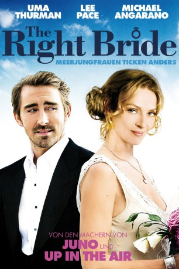

#9494 The Right Bride - Meerjungfrauen ticken anders
Alternativ: Ceremony
 
 IMDB-Wertung: 5.5 / 10
IMDB-Wertung: 5.5 / 10  Metascore: 0
Metascore: 0 
Kinderbuchautor Sam ist rechtschaffen verschossen in die sowohl einige Jährchen ältere als auch charakterlich reifere Zoe. Da hilft es auch nichts, dass Zoe vor ein paar Monaten erst den kurzen Flirt mit ihm beendet hat und soeben im Begriffe ist, auf ihrem ausladenden Landsitz an der Küste unter großem Pomp einen anderen zu freien. Sam jedenfalls überredet seinen besten (und ahnungslosen) Kumpel, ein paar Tage mit ihm an die See zu fahren. Das Ziel ist rein zufällig Zoes Hochzeit. Sam hat auch schon eine Idee, wie er sich einlädt.
Jahr: 2010
Dauer: 89 Minuten
FSK: 12
Land: USA Studio: Magnolia PicturesTonspuren: DTS - ,
Untertitel:
Auflösung: 1080p (1920x816) Größe: 6379 MB
Genre: Komödie, Liebe
Regisseur: Max Winkler
Drehbuch: Max Winkler
Soundtrack: Eric D. Johnson
Darsteller:
 Michael Angarano als Sam Davis
Michael Angarano als Sam Davis Uma Thurman als Zoe
Uma Thurman als Zoe Reece Thompson als Marshall Schmidt
Reece Thompson als Marshall Schmidt Lee Pace als Whit Coutell
Lee Pace als Whit Coutell Jake Johnson als Teddy
Jake Johnson als Teddy Brooke Bloom als Margaret Cornish
Brooke Bloom als Margaret Cornish Rebecca Mader als Esme Ball
Rebecca Mader als Esme Ball Nathalie Love als Blonde Maid
Nathalie Love als Blonde Maid- Jack Koenig als Party Guest #5
 David Boston als Wedding Ceremony Guest (uncredited)
David Boston als Wedding Ceremony Guest (uncredited)- Oscar J. Castillo als Chef (uncredited)
- Harper Dill als Carol Archer
- Charlie Moss als Nico Spicer
- Lisby Larson als Nina Pileggi
- Paul Amodeo als Bruce Singer
- Philip Carlson als Butler
- Catherine Russell als Party Guest #4
- Jerrin Holt als African Man
- Von Jeff als Von
 Joe Remy Dolinsky als Chef #2 (uncredited)
Joe Remy Dolinsky als Chef #2 (uncredited)- Steve Triebes als Groomsman #2 (uncredited)
Datei: X:\2010(N-Z)\Right Bride - Meerjungfrauen ticken anders, The (2010, FSK12, 1920x816).mkv seit 05.09.2018
Festplatte: HD 2010(G-Z)-2011(A-F)
 Es gibt insgesamt 115 Filme in der Gruppe '2010(N-Z)'
Es gibt insgesamt 115 Filme in der Gruppe '2010(N-Z)'